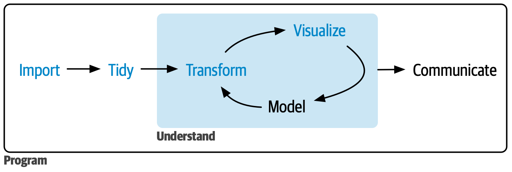
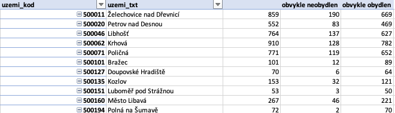
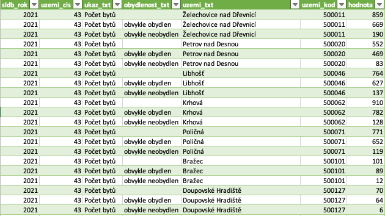
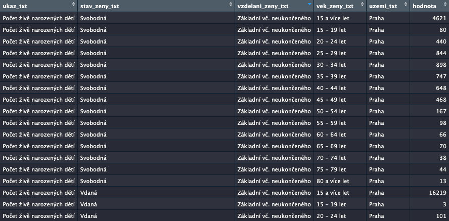
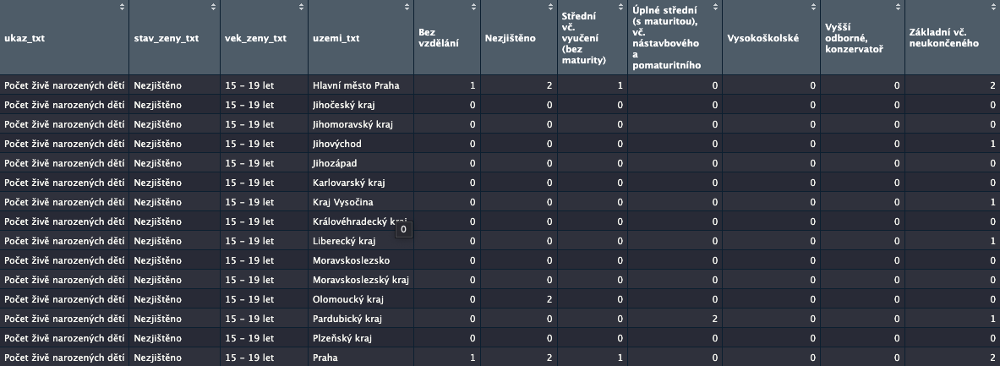
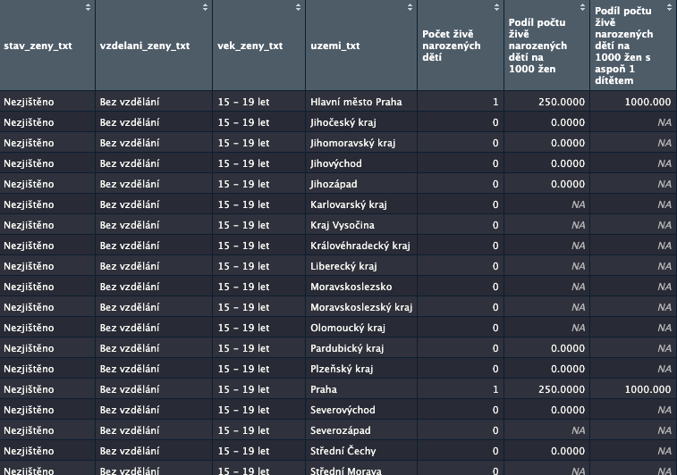
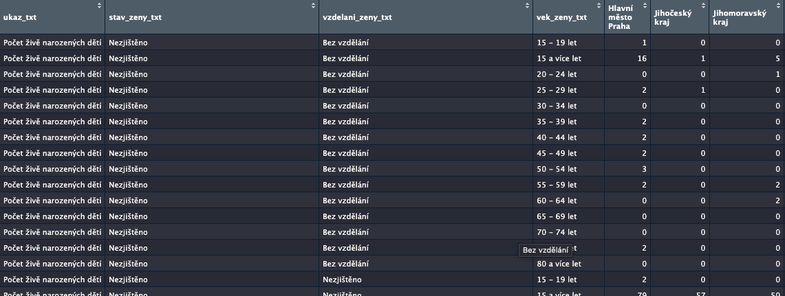
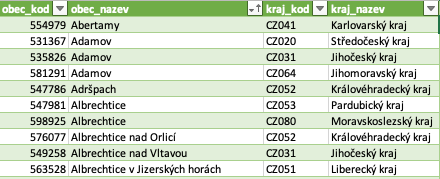

Analýza dat
Pilotní program školení analytiků 2022
Proč a jak
Proč jste tu dnes vy a co si chcete odnést??
Co vás na práci s daty štve?
Cíle aneb co si dnes odnesete
Proč - Co - Jak
- obrázek o stavu oboru analýzy dat
- principy použitelné s jakýmkoli problémem a nástrojem
- kde vzít veřejná data a jak si s nimi poradit
- praktické provedení některých konceptů z první části
- tipy a triky pro práci s Excelem
- tipy, kam dál
Co není cíl
⨉ naučit se do hloubky statistiku
⨉ naučit se R, Python a git
⨉ pouštět se do nestandardních typů dat
Jak na to půjdeme
principy - postupy - techniky
Jak budeme dnes pracovat 🙏
Bezpečné prostředí
Všichni se učíme (pilot!)
Je OK nevědět
Analytická práce dnes
Důvěra v analýzy díky
- porozumění uživateli
- integritě postupu
- komunikaci výsledků
Práce v kódu, ale zároveň integrace analýzy a interpretace
Datové produkty: nejen PDF reporty (web, interaktivita)
Agilní přístup k datové analýze
Analytik 🧠 a uživatel 👀
Rychle reagovat
Moct navázat na už udělané
Dobře komunikovat: v průběhu i výsledek
Sám/sama datům dobře rozumět
Získat si důvěru: proces, kontrola kvality, transparentnost
Kde data vzít
Otevřená data
ČSÚ <=> otevřená data
ČSÚ <=> data a metadata
ČSÚ <=> Eurostat (někdy lepší)
Data o životním prostředí
Geodata a číselníky
“Ostatní data”
Vaše tipy?
=> Co to je za data? Kde se vzala? Kde je dokumentace?
Krok stranou: ČSÚ, katalogy, číselníky
Co s daty dělat
Mentální model
zdroj: https://r4ds.hadley.nz/whole-game.html
Teze pro postupy
- Čištění a zpracování dat jsou součástí analýzy
- Iterace
- Vyplatí se investovat do rozumného postupu a dokumentace
- Vizualizace nejen jako výstup, ale jako nástroj analýzy
Vizualizace

Neboli
Není to lineární proces
Spolupracujete se svým budoucím já.
Vaše budoucí já vám poděkuje
(kolega*yně taky)
Žádná analýza
není jednorázovka
Postup + dokumentace =
zkontrolovatelnost
opakovatelnost
automatizovatelnost
Na postupu a organizaci záleží
petrbouchal.xyz/analytici
Co vás štve, když otevřete něčí starý Excel nebo složku s analýzou?
Jak tedy na to
📋 Dokumentovat data, postup, soubory
📥 Oddělit vstupní data od analýzy
📂 Organizace projektu na disku
(👩💻 Pracovat v kódu ideálně s open source nástroji)
🔌 (Vytvářet kompletní opakovatelné workflow)
🔢 Verzovat analýzu (kód) a pokud možno i výstupy
✅ Využívat strojovou validaci vstupů a výstupů
(📕 Používat nástroje na propojení textu a kódu: Jupyter, Rmarkdown, Quarto)
(💽 Zaznamenat prostředí, kde kód běží)
Jak to provést
Organizace projektu
📂 data
📂 analyza
📂 vystupy
📄 README.docx
Ideálně konzistentní napříč projekty
Názvy souborů
“Naming things is hard”
❌ hotovo-final1-fin2.1led21.xlsx
✅ report01-vypocty_20220926.xlsx
- popisný název - čitelný pro lidi
- standardní formát datumu (2022-10-23)
- funguje abecední řazení
- lze strojově zpracovat - čitelný pro stroj
Názvy proměnných, sloupců aj.
- konzistentně (CamelCase, snake_case, cesky, Česky)
- strojová vs. lidská čitelnost
Organizace dat: tvary
Data mají různé tvary: dlouhá, široká, něco mezi
Různé tvary pro různé účely
- “dlouhá” data často lepší pro analýzy
- široká pro čtení/srovnání očima
Dostat data do správného tvaru je úkol sám o sobě
Co identifukuje jednu řádku?
Organizace dat: tvary
Základ:
- co informace, to buňka/sloupec
- co řádek, to pozorování
- co datová sada, to tabulka / list / objekt
- ale: co je pozorování??
pivot - unpivot
databázová normalizace
Organizace dat: dobré praxe
- co informace, to buňka/sloupec
- Excel: co list, to tabulka
- Excel: data = text, ne formát
- Excel: přímá napojení na zdroje
- Excel: použít funkci tabulky
- dokumentace (metadata / codebook) blízko dat
- data ukládat nefiltrovaná, kurzor na začátku atd.
- udržovat informaci o původu dat (jasné ID zdroje; URL)
Krok stranou: náš datový úkol
“Hledá se obec s největším podílem neobydlených bytů v každém ORP ČR.”
Načtení dat
- CSV / TSV / ; / ,
- pozor na formáty (desetinné čárky, mezery)
- datumy!
- znaková sada
- Excel: PowerQuery >> standard Excel
- NULL, –, -99, “_”

Krok stranou: nástroj PowerQuery
Co
Proč
Jak
Čištění dat
Cíl: data vhodná pro analýzu
Formáty
Nepřesnosti?
Duplicity?
Chybějící data?
Nesprávné hodnoty?
Extrémní hodnoty?
Transformace dat
Široká
Dlouhá
Dlouhá
Široká
Široká
Široká
Transformace

zdroj: https://www.garrickadenbuie.com/project/tidyexplain/
Propojování

zdroj: https://www.garrickadenbuie.com/project/tidyexplain/
Propojování
zdroj: https://www.garrickadenbuie.com/project/tidyexplain/
Propojování

zdroj: https://www.garrickadenbuie.com/project/tidyexplain/
Proč se propojování nedaří
- mezery na začátku a konci
- velká a malá písmena
- dvojité mezery
Číselníky, klasifikace atd.
Číselníky, klasifikace atd.
https://apl.czso.cz/iSMS/
https://www.cuzk.cz/ruian/Poskytovani-udaju-ISUI-RUIAN-VDP/Ciselniky-ISUI.aspx
Proč číselník nesedí
- jiný číselník
- jiná verze číselníků
- neshody mezi tvůrcem dat a tvůrcem číselníku
- je Praha okres?
- jsou městské části Prahy ORP?
Číselníky, klasifikace atd.
- pozor na platnost (ke kterému datu?)
- pozor na verze (kraje, NUTS kraje, staré NUTS kraje)
- každý číselník správně má jednoho správce
- ale jsou tu překryvy, správci různých dat občas zveřejňují duplicitní číselníky (např. MPSV k datům o nezaměstnanosti)
Výpočty a modelování
Exploratorní datová analýza
Explorace a poznávání dat
Proč
Poznat data
Najít problémy
Poznat variabilitu
Detekovat pravidelnosti
Jak
Koukat na data
Hledat podivnosti
Vizualizovat
Sčítat a porovnávat
Zkoumat výseky dat
Co lze v Excelu
Sařadit si data
Souhrnné statistiky
Kontingenční tabulka
Histogram
Box plot
Náhled rozdělení v PowerQuery
Heatmapy (podmíněné formátování)
Základní mapy (kraje)
Korelace, regrese, t-testy
Kam dál
Další nástroje
- Extrakce dat: OpenRefine, Tabula
- Vizualizace: Datawrapper, RawGraphs, Flourish
- Interaktivní: Google Data Studio, PowerBI
- Regulérní výrazy
Práce s kódem
SQL a databáze
R nebo Python?
=> automatizace
Literate programming
ObservableJS
Jupyter Notebooks
R Markdown / Quarto
Verzování (git, Github)
Reflexe
Díky!
pbouchal@gmail.com
petrbouchal.xyz